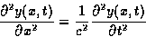

Available in English
Cuerda Vibrante
Instrucciones:
- Con la barra de Scroll vertical escoja la amplitud de vibración de la
cuerda.
- Con la barra de Scroll horizontal escoja la posición del máximo (o mínimo).
Se resuelve la ecuación de Onda:

en una dimensión espacial para una
cuerda vibrante con una forma inicial triangular. La cuerda está
siempre atada en sus extremos y después de escogida la forma inicial se la "suelta" y vibra.